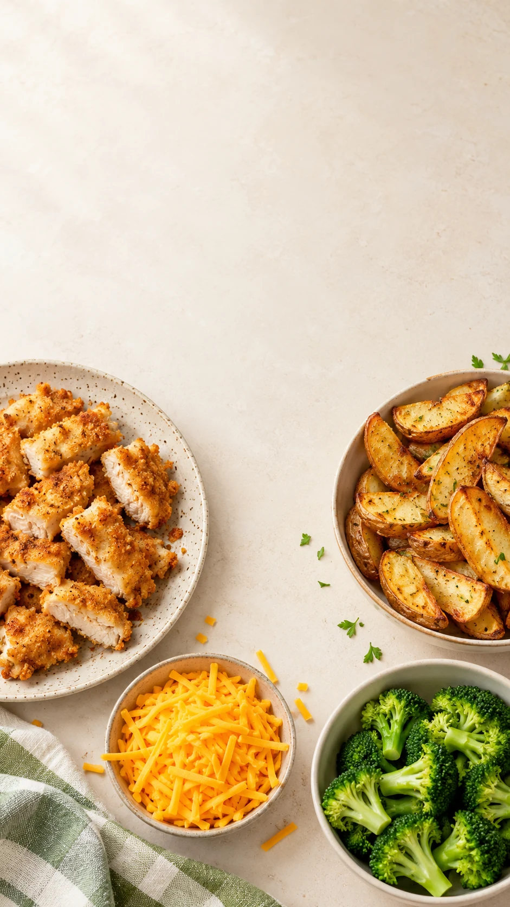
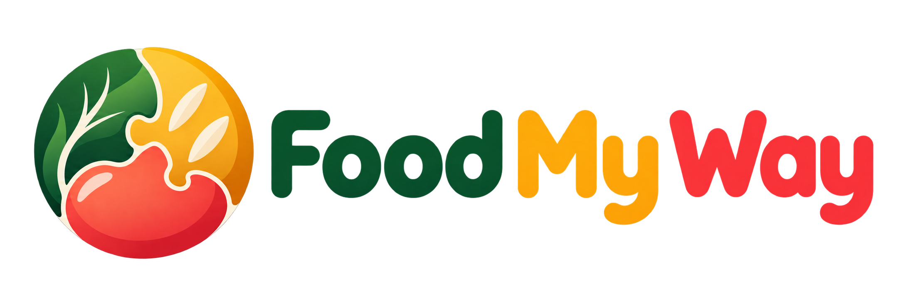

Preference worksheet
Capture accepted foods, textures, temperatures, brands, mixed-food preferences, allergies, and household constraints.
A practical two-week reset for tired meal planners
Start with what they'll eat. Get 14 days of easy meal ideas, simple swaps, and ready-to-use grocery lists - without turning dinner into a negotiation.
One-time purchase. Instant digital access after confirmed payment. 14-day refund policy.

Less guessing. Less waste.
You need a realistic starting point built around foods your household already buys and accepts. This kit helps you plan the next two weeks, swap what will not work, and keep components separate when that makes dinner easier.
Inside the kit
Capture accepted foods, textures, temperatures, brands, mixed-food preferences, allergies, and household constraints.
Breakfasts, lunches, dinners, and snacks that deliberately reuse ingredients and leftovers.
Adjust taste, texture, ingredients, or preparation time without abandoning the whole meal.
Clear quantities, timing, separated-component options, allergen reminders, and low-energy alternatives.
Week 1 and Week 2 lists tied to the recipes, plus room for household substitutions.
Use "liked it," "might try again," and "not today" notes to build a better next week.
The food bridge idea
Start with a familiar food and offer one optional nearby variation. This is not a forced progression; it is a way to make the next choice manageable.
Made for real households

Keep going after the kit
Use the Food My Way app to start with familiar ingredients, generate a flexible recipe, make swaps, save what works, and turn saved meals into a plan.
Try Food My Way freeQuestions
No. This is a practical planning resource, not medical advice or treatment. Discuss significant feeding, growth, swallowing, allergy, or nutrition concerns with a qualified professional.
No product or substitution is universally allergy-safe. Always check current labels and cross-contact information for the products you use.
After Stripe confirms payment, use the same email to access the download. A receipt is sent to the email entered at checkout.
If the kit is not useful for your household, contact support@foodmyway.app within 14 days of purchase. See the terms for full details.
Make the next two weeks easier
Get the complete Food My Way Picky Eater Survival Kit for a one-time $19 purchase.
Get the Survival Kit - $19Secure checkout through Stripe. Digital product. 14-day refund policy.Already purchased?
Use the same email entered at Stripe checkout. We will send a one-time sign-in link, then return you here to download the kit.